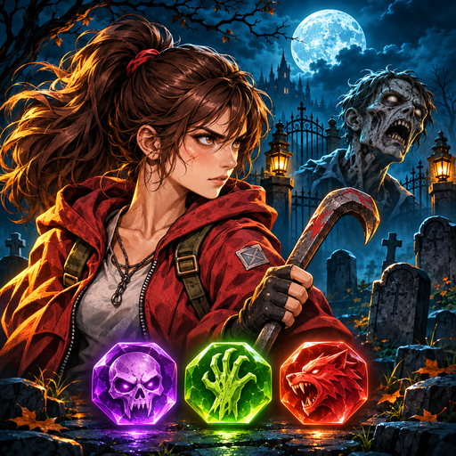
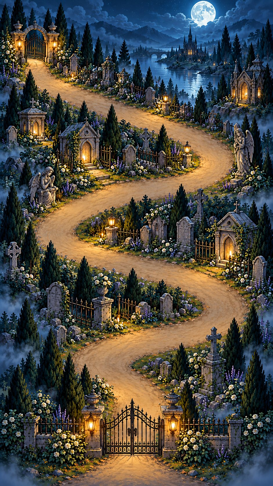

SMALL STUDIO · BIG PLAY ENERGY
Good games.
Good nonsense.
We make games for everyone's entertainment — the kind that turn “just one more round” into a very suspicious bedtime.
Meet the games ↓in the making of this page ↗
UP!
GAME STUDIO
2
somewhere between a sketch
and “who moved the dice?”
01 / PRESS START
Pick your
kind of chaos.
Quick decisions, close calls, and the occasional “that was absolutely the game's fault.” Find a little adventure for whatever mood you're in.

Dead Run Match
Match falling monsters to earn escape steps. Reach the cemetery gate before the zombie catches you.
EXPLORE THE GAMESkyDrop Challenge
Take the scenic route down. A little wind, a lot of sky, and a landing plan that is mostly optimism.
DOWNLOAD ANDROID TEST BUILDFEATURED GAME · ANDROID · OFFLINE
Dead Run
Match.
One match buys one step. In a moonlit cemetery, a red-hooded survivor has 32 steps to reach the gate while a zombie follows close behind.
Every round changes the chase.
Move the falling monster left or right, make groups of three or more, and watch the pieces above fall into new matches. Each cleared group earns one escape step. When a round ends, the illustrated cemetery map shows your progress—then the zombie moves five steps.
Clear eight groups to advance. If you survive with fewer, try the same level again; the pace gradually rises as you go. Reach the gate before the zombie reaches you.

questionably
official
our founding document
was a doodle on a napkin
02 / OUR TOTALLY TRUE ORIGIN STORY
Born from dirt.
Fueled by snacks.
Legend says Red Earth Game Studio began when a tiny gecko wandered into a red-soil garden, sat on a game sketch, and refused to move until someone made it playable.
We followed the gecko's very firm creative direction. Today, we make small, welcoming games for big and little humans alike. The gecko remains in charge of quality assurance. Mostly it checks whether the snacks are unattended.
Our process is simple: dream up a game, make it fun, ask the gecko, and retrieve the dice.
03 / END OF TOUR, START OF FUN
That's the whole
little world.
Thanks for stopping by. May your rounds be short, your snacks be plentiful, and your gecko never discover game night.
Back to the top ↑